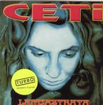

Home Artist links Label link

CETi - Lamiastrata
| Artist: | CETi |
| Title: | Lamiastrata |
| Label: | Oskar Oskar 1010 CD |
| Length(s): | 60 minutes |
| Year(s) of release: | 1992/2002 |
| Month of review: | [05/2006] |
Sample this album in MP3
The music
CETi is a Polish hardrock metal outfit that fits in well with second half eighties hardrock bands. We hear rough and loud vocals, lots of guitars and -here come the progressive touches- lush keys. Further more the album opens up with your basic classical overture. At times the guitar solos have a rather nice melodic take, for instance in the semi epic Satan's Cavalry Part III. The vocals need(ed) attention: apart from sounding rough, they were not that controlled and lacked the diction necessary to properly deliver the lyrics in a way different from the now constant stream of unintelligible vocalisations. This lack of control wore me down after some time. On the other hand, in the spots where vocalist Kupczyk does gain control, the poor English of the lyrics becomes apparent. Maybe the band should have stuck with Polish: pronunciation is better on the bonus tracks in that language.
Even though this disc was released in 2002, the original album was released in 1992, which goes quite some way in explaining the band's style.
Those into late eighties hardrock and metal might find this nice, especially since the album has some pretty good melodies and harmonies wedged in between the power driven regular material on the disc. Don't consider this for its progressive content, though.
© Roberto Lambooy